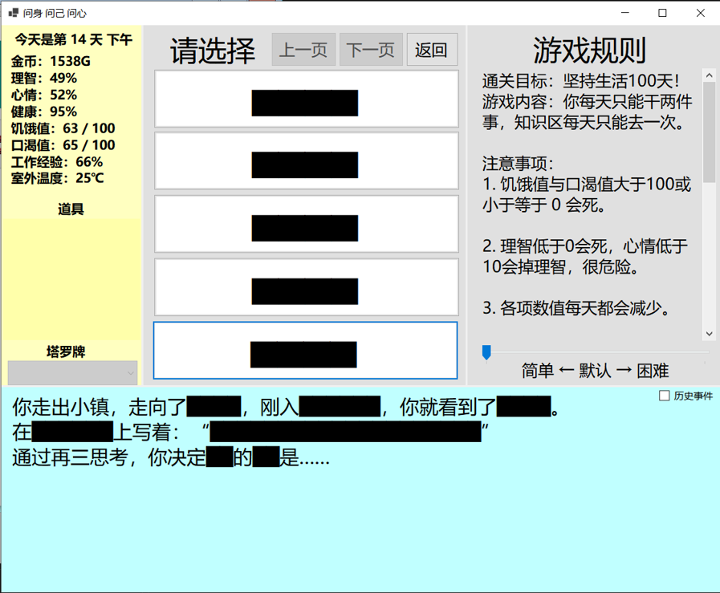
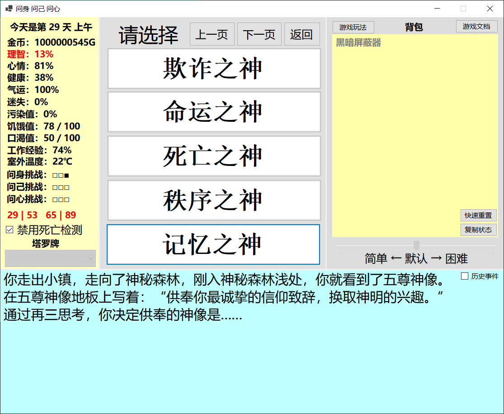

道具图鉴
生存依仗
📌 核心理念：
“道具是你生存的重大依仗，合理的分配使用，同样重要！”
【功能道具（常驻不消耗）】
黑暗屏蔽器
- 黑暗屏蔽器是观看主界剧情的关键，若你没拥有黑暗屏蔽器的情况下，黑暗将会干扰你的意识。
- 黑暗屏蔽器用于屏蔽主线剧情中的黑暗干扰。
- 可在 神秘商店 花费 100理智 购买。
-

未拥有黑暗屏蔽器
拥有黑暗屏蔽器
💡 Tip: 黑暗屏蔽器并非必需品，您完全可以全凭记忆摸黑游玩。
御寒服
- 用于保暖，可以抵抗最高 -10℃ 的低温。
- 可在 超市 花费 500金钱 购买。
- 可以使用 太阳水滴 在 工作房室 升级为 太阳·御寒服。
- 升级消耗：减少 5 点理智、减少 15 点健康、增加 5 点心情、增加 50 点污染，并消耗太阳水滴。
太阳·御寒服
- 是御寒服的升级版，可以抵抗现版本最低的 -50℃ 低温。
御焰服
- 用于保凉，可以抵抗最高 55℃ 的高温。
- 可在 超市 花费 500金钱 购买。
- 可以使用 月亮水滴 在 工作房室 升级为 月亮·御焰服。
- 升级消耗：减少 5 点理智、减少 15 点健康、增加 5 点心情，消耗月亮水滴，并造成 50 点污染。
月亮·御焰服
- 是御焰服的升级版，可以抵抗现版本最高的 100℃ 高温。
污染干扰器
- 对付污染的好方法，推荐尽快做出来。
- 可在 工作坊室 使用以下材料合成：2000金钱、25理智、25心情、3饥饿值、3口渴值、25健康、2个理智精华。
- 合成污染干扰器时，会额外造成 30 点污染。
- 当玩家持有污染干扰器时，每天减少 5 点污染。
【材料道具（作为合成/购买材料）】
太阳水滴
- 采集自太阳的神秘材料。
- 可在 神秘商店 花费 50理智、1000金钱 购买得到。
- 背包里只能携带一个。
月亮水滴
- 采集自月亮的神秘材料。
- 可在 神秘商店 花费 50理智、1000金钱 购买得到。
- 背包里只能携带一个。
理智精华
- 从理智中提取的重要燃料。
- 神赐道具技能发动的燃料，也是许多道具的合成材料。
- 可在 神秘商店 的 提纯项目 花费 100理智 购买得到。
- 可同时在背包里携带多个。
废料
- 从 时空碎块：大陆终焉 中获得的特殊材料。
- 通过在 时空碎块：大陆终焉 的 外城区 前往 垃圾山 获得。
- 该材料可在 时空碎块：大陆终焉 的 外城区 前往 垃圾回收站 换成 时空碎块专用金钱。
优质废料
- 从 时空碎块：大陆终焉 中获得的特殊材料。
- 通过在 时空碎块：大陆终焉 的 外城区 前往 垃圾山 获得。
- 该材料可在 时空碎块：大陆终焉 的 外城区 前往 垃圾回收站 换成 时空碎块专用金钱。
【消耗品道具（常驻但使用后消耗）】
急救包
- 保命专用道具，中后期必备。
- 效果：当健康值低于 0 时，消耗急救包将健康值恢复至最大健康值的一半，并抵消一次死亡。
- 可在 超市 花费 1000金钱 购买，一次最多携带一个。
- 使用提示文字：“你健康值过低，即时使用急救包救了你一命！”
解毒剂
- 保命专用道具，中后期必备。
- 效果：抵消一次误食毒蘑菇事件（27号随机事件），但任然会受到副作用影响：-10理智、-5心情、-3健康。
- 可在 超市 花费 1000金钱 购买，一次最多携带一个。
- 使用提示文字：“你误食红伞伞白杆杆，幸亏急忙打了一针解毒剂才安然无恙。”
幸运符
- 重要道具！提高气运的同时，也是保命专用道具，中后期必备。
- 被动效果：在物品栏时，提高 5 点气运值。
- 触发效果：抵消一次被汽车撞到事件（31号随机事件），但任然会受到副作用影响：-1理智、-1心情。
- 可在 超市 花费 1000金钱 购买，一次最多携带一个。
- 使用提示文字：“你走在路上，差点被一辆疾驰而过的汽车撞到，手中的幸运符化为飞灰。”
舒缓药
- 保命专用道具，中后期必备。
- 触发效果 1：当心情值低于 10 时，消耗舒缓药将心情值恢复至 50。
- 使用提示文字：“由于心情过低，情急之下吃了舒缓药平复了一下情绪。”
- 触发效果 2：当心情值高于 200 时，消耗舒缓药将心情值恢复至 50，并抵消一次死亡。
- 使用提示文字：“你情绪异常，即时使用舒缓药救了你一命！”
- 可在 超市 花费 1000金钱 购买，一次最多携带一个。
矿泉水
- 恢复口渴值的即时道具。
- 点击道具，消耗一瓶矿泉水：-5饥饿值、+50口渴值、-1理智、+2心情、-1健康。
- 可在 超市 花费 500金钱 购买。
瓶装饮料
- 恢复心情值的即时道具。
- 点击道具，消耗一瓶瓶装饮料：+10饥饿值、+35口渴值、-5理智、+40心情、-10健康。
- 可在 超市 花费 500金钱 购买。
压缩饼干
- 恢复饥饿值的即时道具。
- 点击道具，消耗一块压缩饼干：+60饥饿值、-10口渴值、-1理智、-5心情、-3健康。
- 可在 超市 花费 500金钱 购买。
【神赐道具（信仰）】
- 欺诈之面（由欺诈赐予的信仰道具，被动：25%概率骗过死亡。主动：带上面具重置自身一切属性，换一个人生活下去。）
- 命运之骰（由命运赐予的信仰道具，被动：每五天触发依次命运投掷。主动：向上抛起骰子，篡改命运，使接下来三天的随机事件必定为好的。）
- 死亡之镰（主动效果：举起镰刀，让自己处于生死之间，使接下来三天无视死亡。）
- 秩序之杖（主动效果：翻开书本，让自己处于规则附身，使接下来三天获得的各项数值翻倍。）
- 记忆之书（主动效果：翻开书本，让自己处于绝对理智，使接下来三天理智无限。）
- *详细机制与获取方法请参考主文档或后续分支页面。